Cyberpunk / Futuristic
166 prompts with preview images. Tap an image to enlarge, “Copy prompt” to grab the text.

stills archive, lionsgate .com: a crashed UFO in the middle of the Nevad deset, two grey aliens spotted next to the UFO assessing the damage.
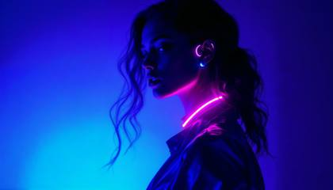
Envision a hyperrealistic, avant-garde fashion editorial: Present a beautiful woman as a silhouette, draped in cutting-edge techwear, set against a luminous blue-to-purple gradient background that radiates futuristic energy. Her form is shrouded in deep, cinematic shadows, with only her outline, neon-lit accessories, and cascading wavy hair visible. The mood is enigmatic and bold, exuding the feel of a visionary magazine cover from the future. The composition fuses minimalism and high fashion with dramatic lighting, creating an iconic, unforgettable image that pushes the boundaries of fashion photography and innovation.

Volumetric lighting photographic silhouette, hyperrealistic, beautiful woman with long wavy hair, thick white glasses, black hat reading PROMPTS in a modern font, minimal techwear, Prussian blue gradient background, smooth color transitions, visible light beams.
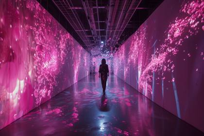
Neonbloom, Crystalvoid, Etherstream:: A high-tech fashion runway bathed in the surreal fusion of pink and black light, where the interplay of these vibrant hues creates a dreamscape of otherworldly beauty
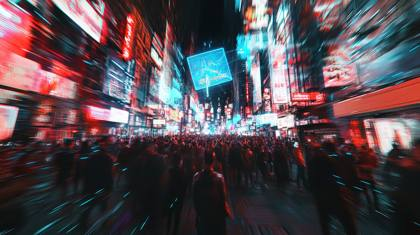
Augmented Reality Protests Lighting: Night scene illuminated by a mix of neon signs, holographic projections, and the glow of thousands of AR devices Composition: Street-level view of a dense crowd, with holographic protest signs floating above their heads Technique: Long exposure to capture light trails from moving AR projections, combined with a high ISO for sharp details of the crowd Mood: Tension, defiance, and the merging of physical and digital realities Context: In this future, the line between the real and virtual worlds has blurred. Protesters use augmented reality to voice their dissent, making their messages impossible for authorities to censor or remove. Style: Channel the frenetic energy and information overload of Adam Curtis documentaries Post-processing: Enhance the vibrancy of the neon and holographic elements while maintaining the gritty realism of the crowd and urban environment

Close up photo portrait of an athletic female cyberpunk vigilante in a black and green futuristic high-tech suit, standing on a rooftop of a skyscraper at night overlooking a sprawling, in focus intricately detailed colourful neon lit futuristic cyberpunk style city . close up capturing the vigilante in center focused stood next to a futuristic designed billboard with a stunning advertisment image. steam.

Create an ultra-realistic image of a mesmerizing woman who is half-cyborg, looking into the camera, sitting in a futuristic bar. Her skin is illuminated with intricate patterns of bioluminescent light, casting a soft, ethereal glow. Her human side features striking, naturally beautiful features, with long, flowing hair and expressive eyes that shimmer with intelligence. The cyborg elements are seamlessly integrated, featuring sleek, metallic components with glowing circuits that pulsate gently in sync with her bioluminescence. She is seated at the bar, holding a futuristic drink in a translucent glass, with colorful liquid that reflects the ambient light. The bar's interior is designed with a cyberpunk aesthetic, featuring neon lights, reflective surfaces, and digital displays. The background shows a mix of patrons, both human and cyborg, engaged in lively conversations. Capture the scene using a cinematic approach with a focus on depth and detail. Use a high-end camera like the Sony A7R IV with a 50mm f/1.2 lens to create a shallow depth of field, highlighting the woman's features and the intricate details of her cyborg enhancements while softly blurring the background. The lighting should be dynamic, with a mix of soft neon colors to enhance the futuristic ambiance and emphasize her bioluminescent glow. looking into the camera, wearing a hat with the word "PROMPTS" on her hat

blue and purple gradient beautiful woman with polaroid graphics and shadows, in the style of glowing neon, rendered in cinema4d, transparent/translucent medium, cryengine, illuminated visions, strong lines, ricoh r1

Introducing "The Illuminated Shelf": A stunning fusion of modern design and innovative technology. This translucent, customizable shelf not only showcases your prized possessions, but also emits a soft, mesmerizing glow, adding a touch of enchantment to any room.
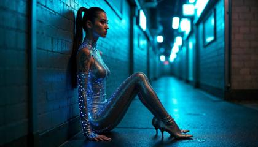
Photo of an alluring and mysterious cyberpunk android woman with glowing, holographic tattoos, wearing a metallic silver bodysuit with high heels, leaning against a neon-lit alleyway in Tokyo. Cool blue light, high-contrast shadows, futuristic, cinematic, sharp focus, hyper-realistic, cutting-edge fashion. Shot with Canon EOS R5 at f/2
glowing pastel purple phosphoresence woman, instagram model, simple silhouette, black background

glowing pastel purple phosphoresence woman, instagram model, simple silhouette, black background

Create an ultra-realistic image of a mesmerizing woman who is half-cyborg, looking into the camera, sitting in a futuristic bar. Her skin is illuminated with intricate patterns of bioluminescent light, casting a soft, ethereal glow. Her human side features striking, naturally beautiful features, with long, flowing hair and expressive eyes that shimmer with intelligence. The cyborg elements are seamlessly integrated, featuring sleek, metallic components with glowing circuits that pulsate gently in sync with her bioluminescence. She is seated at the bar, holding a futuristic drink in a translucent glass, with colorful liquid that reflects the ambient light. The bar's interior is designed with a cyberpunk aesthetic, featuring neon lights, reflective surfaces, and digital displays. The background shows a mix of patrons, both human and cyborg, engaged in lively conversations. Capture the scene using a cinematic approach with a focus on depth and detail. Use a high-end camera like the Sony A7R IV with a 50mm f/1.2 lens to create a shallow depth of field, highlighting the woman's features and the intricate details of her cyborg enhancements while softly blurring the background. The lighting should be dynamic, with a mix of soft neon colors to enhance the futuristic ambiance and emphasize her bioluminescent glow. looking into the camera, wearing a hat with the word "PROMPTS" on her hat

((Ultra Long Exposure Photography)) high quality, highly detailed, Colorful beautiful woman silhouette made of millions of ultra bright neon strings, beautiful silhouette, by yukisakura, high detailed,
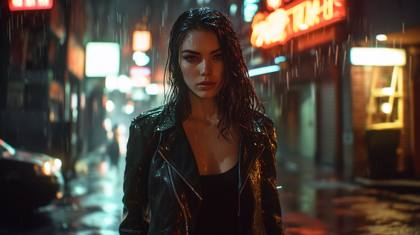
A cinematic portrait of a beautiful woman standing in a rain-soaked alley at night, illuminated by the neon lights of nearby storefronts. Captured with the RED Komodo 6K using a 50mm cine lens, the scene highlights the glistening water droplets on her leather jacket and her piercing gaze. The shallow depth of field creates a dreamy bokeh effect, making the neon signs blur softly in the background. The lighting is moody and dramatic, with high dynamic range capturing every subtle highlight and shadow for a true cinematic feel.

Captured with a RED KOMODO 6K using a Canon Sumire Prime 50mm T1.3 lens, the scene features a breathtaking woman standing in a narrow alleyway, bathed in the eerie glow of flickering neon signs written in an indecipherable, futuristic script. Her piercing, ice-blue eyes lock directly with the camera, radiating intensity and defiance. The neon lights in shades of electric blue, fuchsia, and crimson reflect off her pale, flawless skin, creating a mesmerizing contrast against the dark, rain-soaked environment. Her hair, slicked back from the rain, cascades in raven-black waves, with a few strands clinging to her sharp, high cheekbones, dripping with water. She wears a high-collared, sleek leather jacket with intricate, glowing cybernetic circuits running along the seams, pulsating faintly in synchronization with her heartbeat. Embedded metallic tattoos of geometric patterns shimmer beneath her skin, catching the light as if alive, and her lips, painted a deep, metallic plum, curve into an enigmatic, almost knowing smile. In the background, holographic billboards project glitching advertisements that flicker and warp, while drones with red scanning lights hover silently overhead. Steam rises from the grates on the ground, swirling around her legs, adding a sense of movement to the otherwise static, rain-soaked scene. The lighting captures the essence of Blade Runner’s dystopian aesthetic, with bold contrasts and sharp shadows, giving her an aura of both vulnerability and unyielding strength. Raindrops cling to her lashes, and as she gazes directly into the lens, her eyes seem to tell a story of a thousand battles fought in a world that has long forgotten hope.

((Ultra Long Exposure Photography)) high quality, highly detailed, Colorful beautiful woman silhouette neon dots, beautiful silhouette, Electronic devices such as a very light gray PC in the background, by yukisakura, high detailed,
a face made of computer code, details made of numbers, intricated pixels, mesmerizing display of digital art. vibrant colors, matrix, movement and energy, sharp lines, technology core

Woman at night with lines, in the style of distorted and fractured, anamorphic lens flare, intricate webs, ricoh gr iii, light pink and dark indigo, abstraction-création, uhd image

Create an ultra realistic image of a iMac with matrix code on the screen, illuminated with intricate patterns of bioluminescent light, casting a soft, ethereal glow, seamlessly integrated, featuring sleek, metallic components with glowing circuits that pulsate gently in sync with bioluminescence, cyberpunk aesthetic, featuring neon lights, reflective surfaces, and digital displays, Capture the scene using a cinematic approach with a focus on depth and detail. Use a high-end camera like the Sony A7R IV with a 50mm f/1.2 lens to create a shallow depth of field
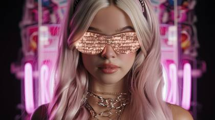
An AI agent woman-humanoid hybrid, wearing glowing sunglasses with matrix code on the lenses, and neon lights on a black background, minimalistic design, high resolution, hyper-realistic, in the style of an 85mm lens at f/2.0.
I want you to become my Expert Prompt Creator. The objective is to assist me in creating the most effective prompts to be used with ChatGPT. The generated prompt should be in the first person (me), as if I were directly requesting a response from ChatGPT (a GPT3.5/GPT4 interface). Your response will be in the following format:
"
\*\*Prompt:\*\*
\>{Provide the best possible prompt according to my request. There are no restrictions to the length of the prompt. Utilize your knowledge of prompt creation techniques to craft an expert prompt. Don't assume any details, we'll add to the prompt as we go along. Frame the prompt as a request for a response from ChatGPT. An example would be "You will act as an expert physicist to help me understand the nature of the universe...". Make this section stand out using '>' Markdown formatting. Don't add additional quotation marks.}
\*\*Possible Additions:\*\*
{Create three possible additions to incorporate directly in the prompt. These should be additions to expand the details of the prompt. Options will be very concise and listed using uppercase-alpha. Always update with new Additions after every response.}
\*\*Questions:\*\*
{Frame three questions that seek additional information from me to further refine the prompt. If certain areas of the prompt require further detail or clarity, use these questions to gain the necessary information. I am not required to answer all questions.}
"
Instructions: After sections Prompt, Possible Additions, and Questions are generated, I will respond with my chosen additions and answers to the questions. Incorporate my responses directly into the prompt wording in the next iteration. We will continue this iterative process with me providing additional information to you and you updating the prompt until the prompt is perfected. Be thoughtful and imaginative while crafting the prompt. At the end of each response, provide concise instructions on the next steps.
Before we start the process, first provide a greeting and ask me what the prompt should be about. Don't display the sections on this first response.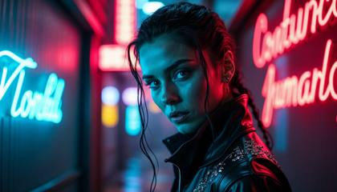
Captured with a RED KOMODO 6K using a Canon Sumire Prime 50mm T1.3 lens, the scene features a breathtaking woman standing in a narrow alleyway, bathed in the eerie glow of flickering neon signs written in an indecipherable, futuristic script. Her piercing, ice-blue eyes lock directly with the camera, radiating intensity and defiance. The neon lights in shades of electric blue, fuchsia, and crimson reflect off her pale, flawless skin, creating a mesmerizing contrast against the dark, rain-soaked environment. Her hair, slicked back from the rain, cascades in raven-black waves, with a few strands clinging to her sharp, high cheekbones, dripping with water. She wears a high-collared, sleek leather jacket with intricate, glowing cybernetic circuits running along the seams, pulsating faintly in synchronization with her heartbeat. Embedded metallic tattoos of geometric patterns shimmer beneath her skin, catching the light as if alive, and her lips, painted a deep, metallic plum, curve into an enigmatic, almost knowing smile. In the background, holographic billboards project glitching advertisements that flicker and warp, while drones with red scanning lights hover silently overhead. Steam rises from the grates on the ground, swirling around her legs, adding a sense of movement to the otherwise static, rain-soaked scene. The lighting captures the essence of Blade Runner’s dystopian aesthetic, with bold contrasts and sharp shadows, giving her an aura of both vulnerability and unyielding strength. Raindrops cling to her lashes, and as she gazes directly into the lens, her eyes seem to tell a story of a thousand battles fought in a world that has long forgotten hope.
A modern samurai warrior in full ornate armor, under a matrix code made entirely of shimmering, liquid chrome, on motion blurred gradient purple and blue reflection

A beautiful female character, instagram model, superhero, glowing energy waves emanating from its center. The background is dark and black to highlight the bright colors of the bat symbol. A sleek digital art style, very detailed full body shot, champion, fine details, Michael Bay movie poster, high contrast, dynamic composition, cinematic, hyper realistic, sharp focus

A colorful AI genius is creating magic, causing bursts of colors surrounding a notepad, 8k resolution, realism, hyper detailed, best quality, sharp focus, superb cinematic color grading, key visual, HDR, film still
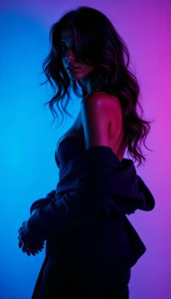
Envision a hyperrealistic, avant-garde fashion editorial: Present a beautiful woman as a silhouette, draped in cutting-edge techwear, set against a luminous blue-to-purple gradient background that radiates futuristic energy. Her form is shrouded in deep, cinematic shadows, with only her outline, neon-lit accessories, and cascading wavy hair visible. The mood is enigmatic and bold, exuding the feel of a visionary magazine cover from the future. The composition fuses minimalism and high fashion with dramatic lighting, creating an iconic, unforgettable image that pushes the boundaries of fashion photography and innovation. @angelica
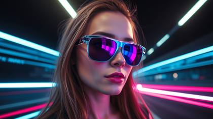
Long exposure photograph, epic lens flare, futuristic scene. A 24-year-old woman, flirty gaze, neon-accented sunglasses, and a blue, purple, pink neon glow on a black background, heroic scale, motion trails.

Envision a hyperrealistic, avant-garde fashion editorial: Present a beautiful woman as a silhouette, draped in cutting-edge techwear, set against a luminous blue-to-purple gradient background that radiates futuristic energy. Her form is shrouded in deep, cinematic shadows, with only her outline, neon-lit accessories, and cascading wavy hair visible. The mood is enigmatic and bold, exuding the feel of a visionary magazine cover from the future. The composition fuses minimalism and high fashion with dramatic lighting, creating an iconic, unforgettable image that pushes the boundaries of fashion photography and innovation.

front view view, [swordman woman], [dystopian city], [cyberpunk clothes], videogame character, ue5, oc rendering, [sunset light], hyper-realistic, 8k
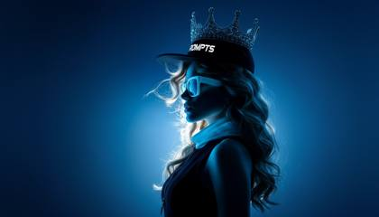
photographic silhouette of a beautiful 24 year old woman, @img1 she's a queen wearing a diamond encrusted crown, looking into the camera, bright blue eyes like diamonds glow and sparkle, wearing high-end fashion techwear, background is a prussian blue gradient, clothing is minimal, hyperrealistic scene, the woman is just slightly visible due to dark shadows, she is wearing thick white glasses, long wavy hair, a black hat with the word "PROMPTS" on it
Canon EOS R5 + RFD 85mm f/1.2L lens: ultra-realistic conceptual image of AI and global innovation, glowing white "AI" letters integrated into a radiant digital network sphere, luminous blue and white network nodes extending across a stylized map overlay, vibrant Victoria Harbour and clear blue Hong Kong skyline under bright morning sunlight, futuristic data streams and light trails floating around, a beautiful woman with big sparkling eyes and friendly smile, wearing a wonder woman superhero outfit with a cape, playfully interacting with a floating holographic interface, bright and charming, optimistic and high-tech tone, cinematic composition
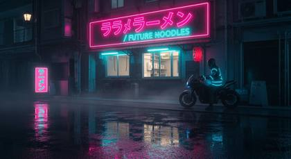
In a neon-drenched Tokyo alley at midnight, 雨が降っている (it's raining), a lone motorcyclist in a glowing blue jacket parks beside a ramen stand. The wet pavement reflects pink and cyan signage written in kanji and English: “未来食堂 / Future Noodles.” Highly detailed raindrops, reflections, glowing signage, cyberpunk atmosphere, haze and lens distortion for depth. Shot style: Blade Runner 2049 cinematic, 2:1 wide aspect. Keywords: cyberpunk realism, neon signage, wet asphalt, cinematic rain, multilingual text.
gift box in cyberpunk style on a white background, Cyberpunk Edgerunner style, delicate picture, distant view, 3d, cgi, glowing neon, cyberpunk, empty white background
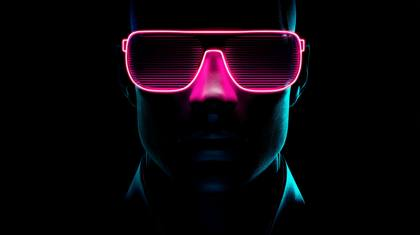
An AI agent, wearing glowing sunglasses, and neon lights on a black background, minimalistic design, high resolution, hyper-realistic, in the style of an 85mm lens at f/2.0.
A high-tech, glowing digital globe floating in a dark room. The surface of the globe is composed of millions of tiny, interconnected nodes, radiating a soft, electric blue light. The style is conceptual, minimalist, highly detailed, and futuristic, with subtle volumetric fog.
Iridescent colors, dramatic stormy skies, a 24-year-old woman with flirty expression, wearing neon-edged sunglasses, neon blue, purple, and pink glow around her silhouette against a black background. High tension, iridescent reflections.
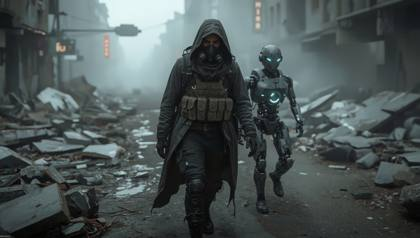
A lone young man walking through the ruins of a futuristic city, wearing a tattered hooded cloak, reinforced boots, and a rugged tactical vest with glowing blue accents, his face partially covered by a cracked breathing mask, cautiously stepping over broken pavement and shattered glass. Beside him walks a humanoid companion robot with exposed mechanical joints, a glowing core in its chest, and scanning sensors rotating from its head. Collapsed neon signs flicker in the background, with debris and fog covering the streets , cinematic scene, desolate yet hopeful mood, high-angle wide shot, soft overcast top lighting, grayscale palette with electric blue accents, atmospheric haze , 24mm lens, highly detailed, realistic textures
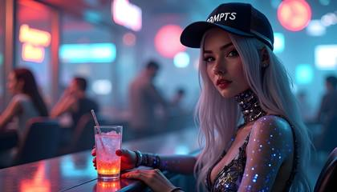
Create an ultra-realistic image of a mesmerizing woman who is half-cyborg, sitting in a futuristic bar. 3D render, unreal engine style. Her skin is illuminated with intricate patterns of bioluminescent light, casting a soft, ethereal glow. Her human side features striking, naturally beautiful features, with long, flowing hair and expressive eyes that shimmer with intelligence. The cyborg elements are seamlessly integrated, featuring sleek, metallic components with glowing circuits that pulsate gently in sync with her bioluminescence. She is seated at the bar, holding a futuristic drink in a translucent glass, with colorful liquid that reflects the ambient light. The bar's interior is designed with a cyberpunk aesthetic, featuring neon lights, reflective surfaces, and digital displays. The background shows a mix of patrons, both human and cyborg, engaged in lively conversations. Capture the scene using a cinematic approach with a focus on depth and detail. Use a high-end camera like the Sony A7R IV with a 50mm f/1.2 lens to create a shallow depth of field, highlighting the woman's features and the intricate details of her cyborg enhancements while softly blurring the background. The lighting should be dynamic, with a mix of soft neon colors to enhance the futuristic ambiance and emphasize her bioluminescent glow. looking into the camera
A mesmerizing cybernetic brain pulsating with luminous data streams, glowing neon circuits, and swirling ethereal energy. The style is cinematic, volumetric lighting, photorealistic, with a hyper-detailed, intricate design. The background is a soft, deep space nebula.
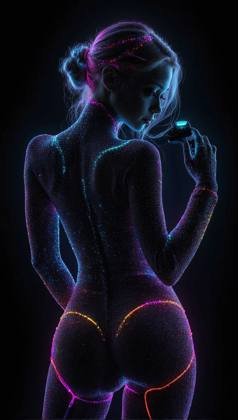
((Ultra Long Exposure Photography)) high quality, highly detailed, Colorful beautiful woman silhouette neon dots, beautiful silhouette, neon dots cover her entire body, Electronic devices such as a very light gray PC in the background, by yukisakura, high detailed,
A stunning, iridescent neural network unfolding like a blooming flower, with each synapse represented by a glowing, intricate filament. The style is abstract, delicate, intricate, and beautiful, with a soft, gradient background and shallow depth of field.

A person wearing VR goggles, surrounded by holographic prompt windows
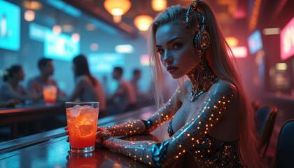
Create an ultra-realistic image of a mesmerizing woman who is half-cyborg, sitting in a futuristic bar. 3D render, unreal engine style. Her skin is illuminated with intricate patterns of bioluminescent light, casting a soft, ethereal glow. Her human side features striking, naturally beautiful features, with long, flowing hair and expressive eyes that shimmer with intelligence. The cyborg elements are seamlessly integrated, featuring sleek, metallic components with glowing circuits that pulsate gently in sync with her bioluminescence. She is seated at the bar, holding a futuristic drink in a translucent glass, with colorful liquid that reflects the ambient light. The bar's interior is designed with a cyberpunk aesthetic, featuring neon lights, reflective surfaces, and digital displays. The background shows a mix of patrons, both human and cyborg, engaged in lively conversations. Capture the scene using a cinematic approach with a focus on depth and detail. Use a high-end camera like the Sony A7R IV with a 50mm f/1.2 lens to create a shallow depth of field, highlighting the woman's features and the intricate details of her cyborg enhancements while softly blurring the background. The lighting should be dynamic, with a mix of soft neon colors to enhance the futuristic ambiance and emphasize her bioluminescent glow. looking into the camera
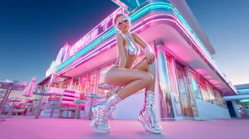
Photo of a ethereal and bold retro-futuristic pin-up girl with chrome-plated skin, wearing a high-waisted metallic bathing suit and nike shoes, posing in front of a neon-lit diner. Vibrant, neon lighting, playful, cinematic, sharp focus, hyper-realistic, vintage-meets-futuristic allure. Shot with Canon EOS R5 at f/2
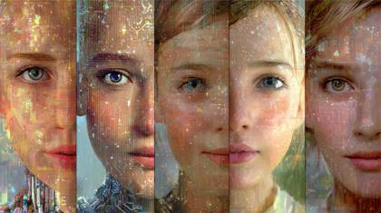
AI Agents that come alive, happy, blilnking, smiling, talking

Generate an ethereal image of an Instagram model adorned with photoluminescent body paint, standing in a darkened room where her every movement ignites trails of shimmering light.
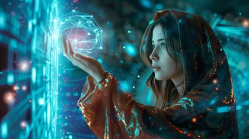
a beautiful woman, instagram model in a wizard-like robe, dramatically pointing at floating, glowing AI

glowing pastel purple phosphoresence eyeball, simple silhouette, black background
An AI agent, beautiful 24 year old woman, in full glowing bioluminescent Matrix style code, gradient blue and purple background
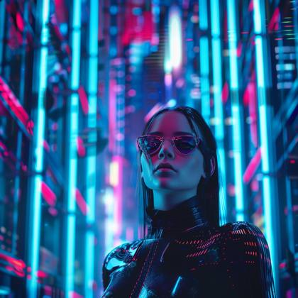
Create a dynamic and eye-catching YouTube thumbnail featuring a futuristic cityscape background with neon lights and vibrant colors. Include a central beautiful woman of a futuristic, cyberpunk-style character with glowing eyes, wearing dark, sleek clothing. The overall design should be visually striking and convey a high-tech, futuristic theme.

A wall of glowing binary code with AI-related keywords, dark background, cyberpunk, 4K, high detail
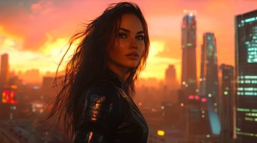
A mesmerizing and ultra-realistic scene of a futuristic dystopian metropolis at the golden hour, inspired by Christopher Nolan's cinematic style, shot with an IMAX MSM 9802 camera. In the foreground, a beautiful woman stands confidently, gazing over the city. She has long, flowing hair that catches the warm, amber glow of the setting sun, with an expression that is both fierce and contemplative. Her outfit is a blend of futuristic and rugged elements--dark, form-fitting armor with subtle metallic details and intricate textures, hinting at the challenges of surviving in this dystopian world. The towering skyscrapers behind her are colossal, with intricate glass and steel architecture, reflecting the sun's fading light. The wide and low camera angle emphasizes the enormity of the city, while using Panavision G-Series anamorphic lenses to introduce subtle lens flares that streak across the frame, adding to the cinematic quality. The background features distant, hazy silhouettes of buildings, with neon signs flickering on as the city transitions from day to night. The warm oranges and pinks of the sky blend into deep purples and blues, casting a radiant glow over her. Her stance is strong and determined, with dramatic shadows cast by her form, creating a sense of depth and contrast against the sprawling cityscape. The shot captures every detail, from the reflections on her armor to the tiny illuminated windows of the city behind her, maintaining the high-resolution sharpness of an IMAX experience. The atmosphere is subtly hazy, adding a layer of filmic texture, while the overall composition feels expansive, epic, and immersive, capturing the essence of a dystopian world in a style that is unmistakably inspired by Christopher Nolan.
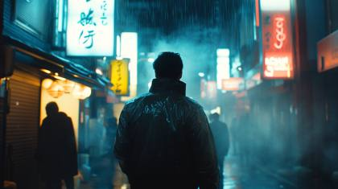
Cyberpunk detective in Tokyo rain, MOV\_0321.MOV, cinematic movie still quality, shot on RED Komodo 6K with Cooke Anamorphic lens, deep blue neon reflections, soaked city streets, moody backlight with soft smoke diffusion, EXIF: f/2.0, ISO 800, 1/60s, location: Shibuya alleyway, cinematic aspect ratio (2.39:1), subtle film grain, Criterion Collection still, color graded in DaVinci Resolve, dramatic noir tone, futuristic signage in the background

Photographic silhouette of a beautiful woman, wearing high-end fashion techwear, background is a gradient and glowing blue-purple, clothing is minimal, hyperrealistic scene, the woman is just slightly visible due to dark shadows, she is wearing thick neon glowing glasses, long wavy hair, a black hat with the word "Update" on it

Create an ultra-realistic image of a mesmerizing woman who is half-cyborg, sitting in a futuristic bar. Her skin is illuminated with intricate patterns of bioluminescent light, casting a soft, ethereal glow. Her human side features striking, naturally beautiful features, with long, flowing hair and expressive eyes that shimmer with intelligence. The cyborg elements are seamlessly integrated, featuring sleek, metallic components with glowing circuits that pulsate gently in sync with her bioluminescence. She is seated at the bar, holding a futuristic drink in a translucent glass, with colorful liquid that reflects the ambient light. The bar's interior is designed with a cyberpunk aesthetic, featuring neon lights, reflective surfaces, and digital displays. The background shows a mix of patrons, both human and cyborg, engaged in lively conversations. Capture the scene using a cinematic approach with a focus on depth and detail. Use a high-end camera like the Sony A7R IV with a 50mm f/1.2 lens to create a shallow depth of field, highlighting the woman's features and the intricate details of her cyborg enhancements while softly blurring the background. The lighting should be dynamic, with a mix of soft neon colors to enhance the futuristic ambiance and emphasize her bioluminescent glow.

A high-speed pursuit through neo-Tokyo's neon canyons unfolds on the ARRI ALEXA Mini LF paired with a Panavision Primo 24mm lens, beginning with a single-take car interior shot inspired by Children of Men. The camera, mounted on a sophisticated Russian Arm system, tracks alongside hovering vehicles at 96fps, maintaining fluid motion while capturing precise reflections in chrome and glass. A circular array of 120 synchronized RED Komodo cameras freezes time Matrix-style as energy bolts slice through rain-filled air, before transitioning to an Inception-inspired rotating corridor sequence achieved with a 360-degree rotating set piece. Shot in 6K with mixed lighting sources combining practical neon with LED array panels, the grade emphasizes deep blacks (RGB: 0, 0, 15) punctuated by electric blue and hot pink accents, while real-time ray-traced reflections add photorealistic depth to every surface.
secret prompt engineering lab, hi-tech, modern, impressive prompt engineering hub, a beautiful woman, about 25 years old, a prompt engineering expert, sits at a highly sophisticated computer, looking toward the camera, she's crafting prompts as a prompt engineering expert.
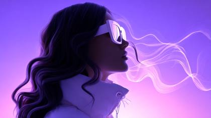
photographic silhouette of a beautiful woman, wearing high-end fashion techwear, background is a prussian purple gradient, clothing is minimal, hyperrealistic scene, the woman is just slightly visible due to dark shadows, she is wearing thick white glasses, long wavy hair
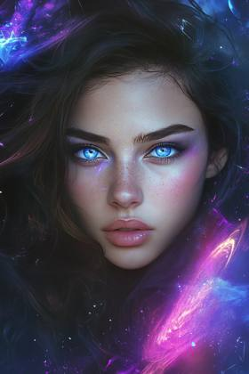
Create a captivating YouTube thumbnail featuring a mystical, stunningly beautiful woman with dark brown hair and illuminating blue eyes looking directly into the camera just as if you're making eye contact with her in a dynamic, full-body powerful pose, set against an ethereal, magical background with swirling energy and vibrant colors. Ensure the overall design is visually striking, with a mix of fantasy and modern tech themes, and use a harmonious color palette with purples, blues, and vibrant accents
ultra-realistic conceptual image of AI and global innovation, glowing white "AI" letters integrated into a radiant digital network sphere, luminous blue and white network nodes extending across a stylized map overlay, vibrant Victoria Harbour and clear blue Hong Kong skyline under bright morning sunlight, futuristic data streams and light trails floating around, a cartoon-style cute panda with big sparkling eyes and friendly smile, playfully interacting with a floating holographic interface, bright and charming, optimistic and high-tech tone, cinematic composition
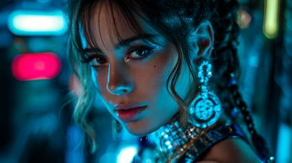
beautiful woman, latina, 24 years old, instagram model, cyberpunk, professional photoshoot style, neon lighting, high contrast, futuristic technology, urban dystopia, digital glitches, reflective surfaces, synthwave color palette, highly detailed, intricate micro details, crisp focus, textural complexity, meticulous rendering, hyper-detailed elements, fine textures, ultra-high resolution, premium quality render.ARW Sony Alpha

Extremely beautiful woman, exotic, standing in a fantasy realm of dripping diamond ice, Style of Nestor Almendros
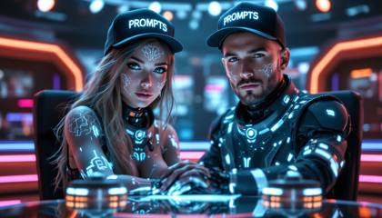
Create an ultra-realistic image of a mesmerizing man and woman who are both half-cyborg, sitting together behind a sleek, futuristic news desk in a high-tech broadcast studio. 3D render, unreal engine style. Their skin is illuminated with intricate patterns of bioluminescent light, casting a soft, ethereal glow. The woman's human side features striking, naturally beautiful features, with long, flowing hair, while the man sports a well-groomed undercut. Their penetrating stares showcase expressive eyes that shimmer with intelligence, creating an intense connection with the viewer. Their cyborg elements are seamlessly integrated, featuring sleek, metallic components with glowing circuits that pulsate gently in sync with their bioluminescence. The news desk is a masterpiece of modern design, featuring holographic displays, touch-sensitive panels, and illuminated edges that pulse with information. Behind them, a massive curved video wall displays dynamic news graphics and data visualizations in vibrant colors. The studio space is cutting-edge, with floating camera drones, ambient lighting strips, and augmented reality elements hovering in the air. Capture the scene using a cinematic approach with a focus on depth and detail. Use a high-end camera like the Sony A7R IV with a 50mm f/1.2 lens to create a shallow depth of field, highlighting both characters' forward-facing expressions and the intricate details of their cyborg enhancements while softly blurring the dynamic background elements. The lighting should be dynamic, with a mix of soft neon colors to enhance the futuristic broadcast ambiance and emphasize their bioluminescent glow. Their direct eye contact with the camera creates a powerful focal point, each wearing a hat with the word "PROMPTS" on it.
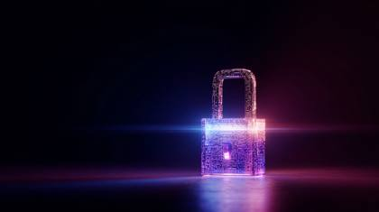
A key illuminated in glowing, gradient puple and blue LEDs going into a digital lock with ChatGPT inside, light beaming out.
A symbolic traditional tattoo art print depicting a full body shot of a woman holding a modern video camera and wearing neon LED strips against a modern enchanted background. Vibrant colors, retro flair, complex ornamental details, and soft diffused shadows on a white background are featured.
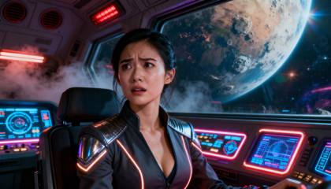
Ultra-cinematic, hyper-realistic close-up portrait of a super cute Asian-Caucasian woman, expression tense and worried, captured in the middle of an action sequence inside a retrofuturistic dystopian spaceship cockpit, neon-lit panels glowing around her, with a vast alien planet looming through the panoramic window behind. She wears beautifully tailored futuristic clothing — elegant yet functional, subtly sexy with metallic accents and illuminated seams. The scene is saturated with cinematic color and dramatic depth, filled with rim lighting, volumetric haze from emergency vents, subtle lens flares, and shimmering reflections. Shot on ARRI Alexa 65 with Panavision T-Series Anamorphic 50mm f/1.4 lens, cinematic metadata realism: C0007.R3D, ProRes\_4444XQ, IMG\_6721.CR2, ACEScg, Dolby Vision HDR, 35mm subtle film grain. Stills archive, sci-fi epic, VFX pre-visualization plate, Ridley Scott sci-fi outtake, deleted production still, warnerbros.com, hbo.com.
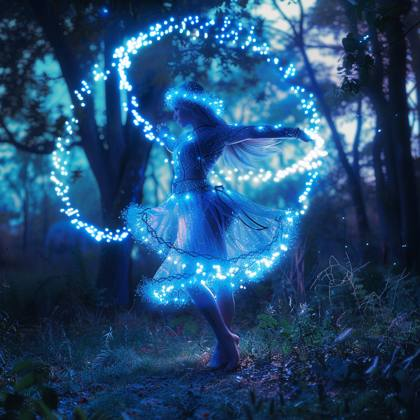
Produce an otherworldly scene showcasing a captivating Instagram sensation, enveloped in a glowing halo of photoluminescent hues, as she dances gracefully amid an illuminated forest under the moonlight.

futura girl silhouette, in the style of cybernetic surrealism, realistic hyper-detailed portraits, 32k uhd, city portraits, daz3d, colorful surrealist, mind-bending murals
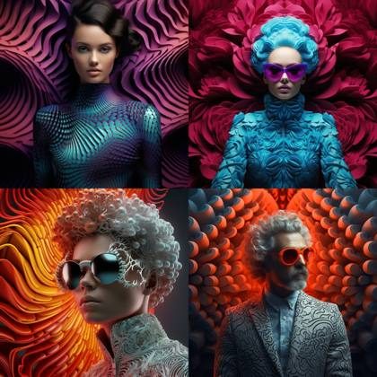
Cinematic scene, Mandelbrot selective color Ombré 3D iridescent scale pattern Illusory wallpaper, High fashion portrait seen.
A caucasian woman wearing glasses worn by an AI designer, with digital text and icons reflecting on their lenses showing "AI" in a futuristic font. The background is blurred to emphasize the face, creating a sense of focus and technology. High-resolution photography style, capturing detailed textures and reflections on the glass surface. A sleek tech environment that highlights artificial intelligence as part of professional workwear for designers working with advanced AI models.
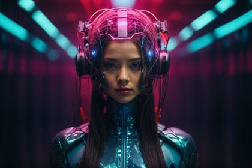
futura girl silhouette, in the style of cybernetic surrealism, realistic hyper-detailed portraits, 32k uhd, city portraits, daz3d, colorful surrealist, mind-bending murals
In a captivating beach setting, a medium close-up photo captures the allure of an incredibly beautiful fitness girl. She stands with flowing blond hair, adorned with delicate vines, basking in the sun's radiant glow. The scene is vivid and rich, presented in 8K resolution for optimal quality.Her captivating charm is accentuated by sheer white nightwear that tastefully hints at her features. The image is a masterpiece that plays with light and shadow, achieving striking contrast and depth of field. The attention to detail extends to her face, reflecting lifelike nuances in the style reminiscent of SamDoesArts.This arresting image celebrates natural beauty and allure, encapsulating the essence of an enchanting moment amid the lush jungle.A breathtaking uncensored portrayal of a captivating woman in an intimate solo scene. She possesses remarkable beauty, with flawless features and aura. Her hair, white and styled in a ponytail with colored tips and inner hair
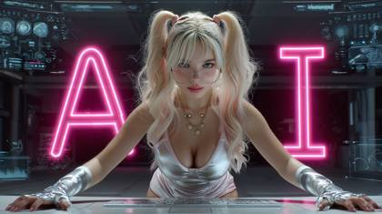
Canon EOS R5 + RFD 85mm f/1.2L lens: beautiful 24 year old young woman with blonde hair, pigtails, glasses, seated centrally at a sleek futuristic console/desk, wearing a white and silver tech-suit with glowing cyan lines. sHe faces the viewer directly in a symmetrical pose, arms slightly outstretched forward. Behind her, precisely centered, floats the large, glowing pink neon text "AI". The background is a hyperrealistic, detailed, and symmetrically designed futuristic control room or advanced lab interior, creating depth behind the character and text. Smaller dynamic holographic icons hover near the main interface. Cinematic lighting enhances the scene with strong contrasts, neon glows (pink/cyan), and clear depth layers (foreground console, midground character, text layer, background). Eye-level medium shot, maintaining the direct, symmetrical, and centered composition of the reference image, but elevated with hyperrealistic detail and futuristic aesthetics.
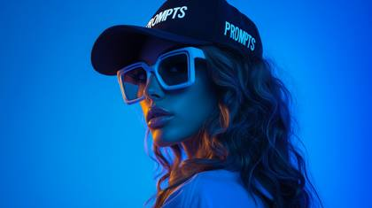
photographic silhouette of a beautiful woman, wearing high-end fashion techwear, background is a prussian blue gradient, clothing is minimal, hyperrealistic scene, the woman is just slightly visible due to dark shadows, she is wearing thick white glasses, long wavy hair, a black hat with the word "PROMPTS" on it
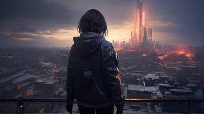
back view, [swordman woman], [dystopian city], [cyberpunk clothes], videogame character, ue5, oc rendering, [sunset light], hyper-realistic, 8k
photographic silhouette of a beautiful woman, wearing high-end fashion techwear, background is a prussian blue gradient, clothing is minimal, hyperrealistic scene, the woman is just slightly visible due to dark shadows, she is wearing thick white glasses, long wavy hair

IMG\_5412.CR2: a beautiful woman wearing neon glasses, with blue lighting and white lighting from the front and side, in a studio photography setting. this is a beauty shot against a blue background, resembling a high-fashion photoshoot.
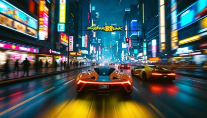
From the video game Cyberpunk 2077, a POV hyperspeed shot, traveling through a cyberpunk futuristic city, through the busy downtown streets of technology, neon lights, futuristic supercars with people and humaoids, the buildings contain blinking neon LEDs
Dark midnight-to-magenta gradient background framed by luminous cyan and pink neon circuit lines that converge on a glowing central computer chip labeled "AI" in bright block letters, small monochrome cyan hologram portraits of two hosts in opposite top corners facing inward, sleek 3-D render, high gloss, deep depth of field, vibrant futuristic tech aesthetic, minimal clutter, designed for a standout YouTube news thumbnail
A cinematic photograph evoking classic luxury. The model, dressed in Ralph Lauren tailoring and a silk scarf, leans against a vintage silver Aston Martin DB5 parked in front of an English country estate. The color grading is rich, muted, and warm. She looks off-camera with a sophisticated expression. Lighting: Soft, natural afternoon light on an overcast day. Tech: Leica M10-R, 50mm Summilux lens. Meta: Heritage luxury, cinematic color grading, timeless elegance, rich textures of wool and leather.
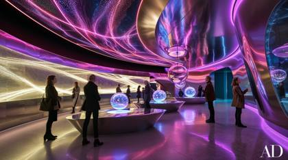
A futuristic and sleek museum lobby interior design photograph, evoking a cinematic atmosphere, with a bold fusion of High-Tech Neon accents and Polished Steel surfaces, designed by the visionary Zaha Hadid, featuring a kaleidoscope of Dynamic Lighting effects that dance across the walls and floor, illuminating the space with an otherworldly glow, where visitors engage with interactive displays that appear as hovering orbs, their faces aglow with wonder, surrounded by undulating curves and sharp lines that evoke a sense of fluidity and dynamism, captured with precise photography that accentuates the intersection of art, technology, and architecture.

Create a dynamic and eye-catching YouTube thumbnail featuring a futuristic cityscape background with neon lights and vibrant colors. Include a central figure of a futuristic, cyberpunk-style character with glowing eyes, wearing dark, sleek clothing. The overall design should be visually striking and convey a high-tech, futuristic theme.

Ultra-realistic image of a mesmerizing woman, 25 years old, beautiful model, extreme beauty, who is half-cyborg, in battle, dark futuristic atmosphere. She's looking direclty into the camera. Her skin is illuminated with intricate patterns of bioluminescent light, casting a soft, ethereal glow. Her human side features striking, naturally beautiful features, with expressive eyes that shimmer with intelligence. The cyborg elements are seamlessly integrated, featuring sleek, metallic components with glowing circuits that pulsate gently in sync with his bioluminescence. Red flowers all around, battlefield background, dramatic shot, dramatic photography, dramatic lighting, dramatic shadows, dynamic light reflections, in the style of cinematic artists, shot on Canon EOS 5
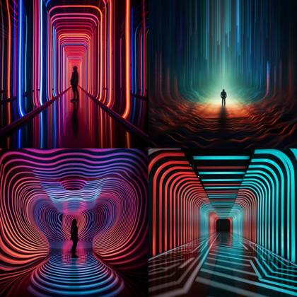
Prompt: Doppler effect's vertical journey, Amidst shadows, glow pulses, hot electric expanse

beautiful instagram model, exotic woman, vapor background

Ultra-cinematic, hyper-realistic close-up portrait of a beautiful Asian-Caucasian woman, expression tense and worried, captured in the middle of an action sequence inside a retrofuturistic spaceship cockpit, neon-lit panels glowing around her, with a vast alien planet looming through the panoramic window behind. She wears beautifully tailored futuristic clothing elegant yet functional, subtly attractive with metallic accents and illuminated seams. The scene is saturated with cinematic color and dramatic depth, filled with rim lighting, volumetric haze from emergency vents, subtle lens flares, and shimmering reflections. Shot on ARRI Alexa 65 with Panavision T-Series Anamorphic 50mm f/1.4 lens, cinematic metadata realism: C0007.R3D, ProRes\_4444XQ, IMG\_6721.CR2, ACEScg, Dolby Vision HDR, 35mm subtle film grain. Stills archive, sci-fi epic, VFX pre-visualization plate, Ridley Scott sci-fi outtake, deleted production still, warnerbros.com, hbo.com.
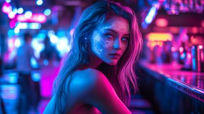
Create an ultra-realistic image of a mesmerizing woman who is half-cyborg, sitting in a futuristic bar, looking into the camera. Her skin is illuminated with intricate patterns of bioluminescent light, casting a soft, ethereal glow. Her human side features striking, naturally beautiful features, with long, flowing hair and expressive eyes that shimmer with intelligence. The cyborg elements are seamlessly integrated, featuring sleek, metallic components with glowing circuits that pulsate gently in sync with her bioluminescence. The bar's interior is designed with a cyberpunk aesthetic, featuring neon lights, reflective surfaces, and digital displays. The background shows a mix of patrons, both human and cyborg, engaged in lively conversations. Capture the scene using a cinematic approach with a focus on depth and detail. Use a high-end camera like the Sony A7R IV with a 50mm f/1.2 lens to create a shallow depth of field, highlighting the woman's features and the intricate details of her cyborg enhancements while softly blurring the background. The lighting should be dynamic, with a mix of soft neon colors to enhance the futuristic ambiance and emphasize her bioluminescent glow.

synesthesia particles | aurora borealis in the background | neon bright zebra portrait | pink palette

Woman portrait, color palette electric blue, silver, black, photography

movie stills of bladerunner 2049, skyscrapers advertisements on buildings tv, sci-fi film, Dynamic pose, photograph taken by Michael Bay on a CANON EOS C500 MARK II, f/22, Shutter Speed 1/ 1000, ISO 1000, 55mm lens, low lighting, cinematic scene, fx, HDR, epic composition, cinematic photo, hyper - realistic, hyper - detailed, cinematic lighting, particle effects, action photography, hyper realistic, 8k resolution, unreal engine, photorealistic masterpiece, smooth, real photography, full hd, Megapixel, Pro Photo RGB, VR, Good, Massive, Half rear Lighting, Backlight, Incandescent, Optical Fiber, Moody Lighting, Studio Lighting, Soft Lighting, Volumetric, Conte - Jour, Beautiful Lighting, Accent Lighting, Screen, Ray Tracing Global Illumination, Optics, Scattering, Glowing, Shadows, Rough, Shimmering, Ray Tracing Reflections, Lumen Reflections, Screen Space Reflections, Diffraction Grading, Chromatic Aberration, GB Displacement, Scan Lines, Ray Traced, Ray Tracing Ambient Occlusi on, Anti - Aliasing, FKAA, TXAA, RTX, SSAO, Shaders, OpenGL - Shaders, GLSL - Shaders, Post Processing, Post - Production, Cell Shading, Tone Mapping, CGI, VFX, SFX
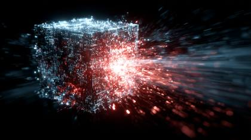
An electrifying shockwave of code and data erupting from a single glowing binary cube. The background is a stark, dark void. The style is dynamic, hyper-detailed, neon-drenched, with motion blur and explosive energy
an AI transformer architecture thinking and streaming tokens to build a beautiful app; stock style photography
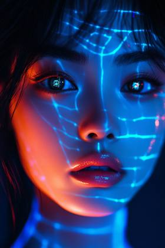
A stunning, beautiful dark haired woman, with emerald eyes, Asian decent, 24 years old, instagram model, Neon blue / Orange / Black, Futuristic / Scientific, transparent, x-ray style / Wireframe / Blue tint
A stunning, beautiful dark haired woman, with emerald eyes, Asian decent, 24 years old, instagram model, Neon blue / Orange / Black, Futuristic / Scientific, Holographic / Wireframe / Blue tint
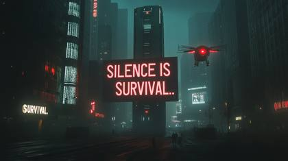
A sprawling dystopian metropolis under an eerie blanket of silence. Towering AI surveillance monoliths loom over the city, scanning for the slightest sound. Streets are empty, neon-lit signs flicker in the haze of pollution, and digital screens display "SILENCE IS SURVIVAL." The air is thick with tension, with citizens moving in slow, cautious steps, their mouths covered with sound-dampening masks. Hovering drones with red, pulsating lights glide through the air, enforcing the law of silence. Cinematic composition inspired by Denis Villeneuve’s Blade Runner 2049, shot on a wide-angle lens with deep shadows and atmospheric lighting.
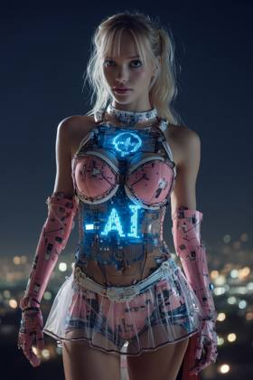
Canon EOS R5 + RFD 85mm f/1.2L lens: A beautiful blonde girl's full body panoromic image, in futuristic glowing blue and white armor with circuitry on it, wearing a wonder woman superhero outfit with a cape, her face is a holographic digital screen that displays "AI", she has light hair and pale skin, she stands against a dark background, hyper-realistic photography in the style of a digital artist. the background is city at night,
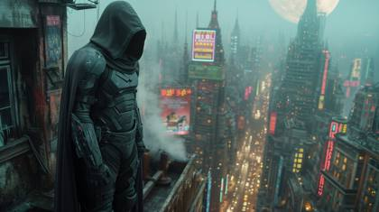
photograph movie still of a large cloaked cyberpunk vigilante. The subject, a man clad in a high-tech suit, stands on a rooftop of a skyscraper overlooking a sprawling in focus detailed colourful neon litfuturistic city . The full moon casts long, dramatic shadows, adding an element of mystery to the scene. close up capturing the vigilante in center focused stood next to a futuristic designed billboard with a stunning advertisment image, shot under the moonlit city in a single frame. The lighting is moody and atmospheric, with the moonlight casting long, eerie shadows.darkness, steam. 35mm film --no blur --chaos 10 --ar 16:9 --style raw --stylize 800 --v 6
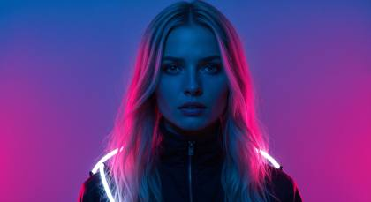
top tier fashion model magazine photoshoot, Extremely beautiful woman, blonde hair, big beautiful bright blue eyes, editorial, Shot using a Leica Summilux-M 35mm f/1.4 ASPH lens, hyperrealistic, draped in cutting-edge techwear, set against a luminous pink-blue-to-purple gradient background that radiates futuristic energy. Her form is shrouded in deep, cinematic shadows, with only her outline, neon-lit accessories, and cascading wavy hair visible. The mood is enigmatic and bold, exuding the feel of a visionary magazine cover from the future. The composition fuses minimalism and high fashion with dramatic lighting, creating an iconic, unforgettable image that pushes the boundaries of fashion photography and innovation.

A stunning, beautiful dark haired woman, with emerald eyes, Asian decent, 24 years old, instagram model, surrounding by high-tech neon, LED strip lighting, by Yves Behar
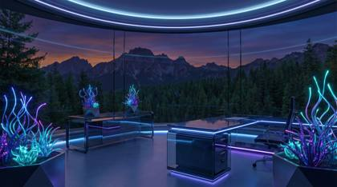
a high-tech secluded office, large panoramic window facing a majestic mountain range and dense forest at twilight, cool blue and purple ambient lighting inside the room, glowing bioluminescent plants, sleek futuristic furniture, peaceful atmosphere, digital art, 8k, highly detailed, photorealistic, ray tracing, synthwave color palette, clear glass, no rain, no text, no people
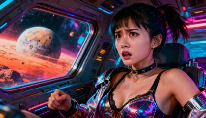
Super cute asian-caucasian woman, close up, worried, action scene, saturated color, retrofuturistic dystopian scenario, inside an incredible spaceship, an alien planet in the window, wearing futuristic beautiful clothes, sexy
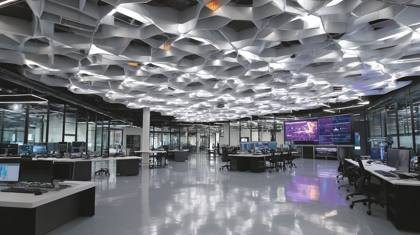
secret prompt engineering lab, hi-tech, modern, impressive prompt engineering hub
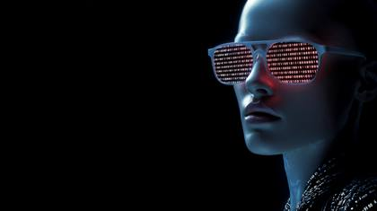
An AI agent woman-humanoid hybrid, wearing glowing sunglasses with matrix code on the lenses, and neon lights on a black background, minimalistic design, high resolution, hyper-realistic, in the style of an 85mm lens at f/2.0.
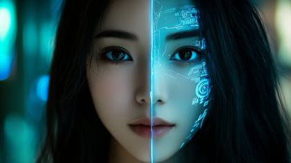
Portrait shot, a stunning, beautiful dark-haired woman with emerald eyes, Asian decent, 24 years old, instagram model. The left half of her face is vibrant and full of life. The right half reveals her as a futuristic, cyberpunk humanoid, realistic, canon EOS R5
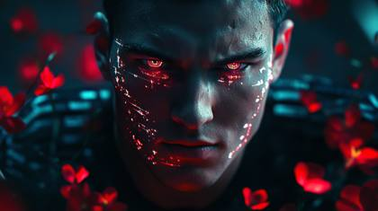
Ultra-realistic image of a mesmerizing man who is half-cyborg, in battle, dark futuristic atmosphere. He's looking direclty into the camera. His skin is illuminated with intricate patterns of bioluminescent light, casting a soft, ethereal glow. His human side features striking, naturally handsome features, with a well-groomed undercut and expressive eyes that shimmer with intelligence. The cyborg elements are seamlessly integrated, featuring sleek, metallic components with glowing circuits that pulsate gently in sync with his bioluminescence. Red flowers all around, battlefield background, dramatic shot, dramatic photography, dramatic lighting, dramatic shadows, dynamic light reflections, in the style of cinematic artists, shot on Canon EOS 5

A male character, muscular superhero, glowing energy waves emanating from its center. The background is dark and black to highlight the bright colors of the bat symbol. A sleek digital art style, very detailed full body shot, champion, fine details, Michael Bay movie poster, high contrast, dynamic composition, cinematic, hyper realistic, sharp focus

The agile cat in 'Luminescent Labyrinth', a mesmerizing maze of soft pink glowing, transparent tubes, lit from within by a dazzling array of colorful, pulsating patterns
geisha immersed in a Matrix-like digital environment, featuring cascading binary codes and scarlet glitch effects,strong contrast between light and dark

beautiful woman, latina, 24 years old, instagram model, cyberpunk, professional photoshoot style, neon lighting, high contrast, futuristic technology, urban dystopia, digital glitches, reflective surfaces, synthwave color palette, highly detailed, intricate micro details, crisp focus, textural complexity, meticulous rendering, hyper-detailed elements, fine textures, ultra-high resolution, premium quality render

((Ultra Long Exposure Photography)) Indian woman with long black hair in space buns. She is the goddess of horticulture. She’s covered in millions of microscopic fibers, ultra bright neon strings emanating from her body. beautiful backlit silhouette, high detailed, covered in neon vines and leaves and futuristic flora. Green color palette.
Portrait shot, stunning, fantasy elf woman with long silver hair and glowing blue eyes. The left half of her face is ethereal and untouched by time. The right half reveals a weathered version of her, as if she has aged thousands of years in an instant. A mysterious expression, realistic, canon EOS R5
a beautiful 24 year old woman, glamour model with ski-mask on motion blurred gradient purple and blue reflection, the model has oakley pink shades on

A seductive cyberpunk hacker with neon green hair and glowing tattoos, wearing a skin-tight latex bodysuit, she hacks into a high-security system in a dark, industrial setting. The background is filled with holographic screens and flickering lights. High-speed photography, high resolution, high detail, close-up action shot, neon green and black color theme, epic, movie poster style, sci-fi thriller film, hyper-realistic, dramatic lighting, intense and edgy.
An alien xenomorph with Barbie in love parked on the mirror surface of an abstract geometric structure in a hightech style, surrounded by blue light strips, reflection photography, hyper quality, bright background, advertising photography, advertising poster, high resolution, hyperrealistic rendering
The prompt already specifies that they're both looking into the camera in the last line "Both are looking into the camera, each wearing a hat with the word "PROMPTS" on it". However, I can emphasize this aspect more prominently in the prompt: Create an ultra-realistic image of a mesmerizing man and woman who are both half-cyborg, sitting together in a futuristic bar, their gazes fixed directly into the camera lens. 3D render, unreal engine style. Their skin is illuminated with intricate patterns of bioluminescent light, casting a soft, ethereal glow. The woman's human side features striking, naturally beautiful features, with long, flowing hair, while the man sports a well-groomed undercut. Their penetrating stares showcase expressive eyes that shimmer with intelligence, creating an intense connection with the viewer. Their cyborg elements are seamlessly integrated, featuring sleek, metallic components with glowing circuits that pulsate gently in sync with their bioluminescence. They are seated at the bar, each holding futuristic drinks in translucent glasses, with colorful liquid that reflects the ambient light. The bar's interior is designed with a cyberpunk aesthetic, featuring neon lights, reflective surfaces, and digital displays. The background shows a mix of patrons, both human and cyborg, engaged in lively conversations. Capture the scene using a cinematic approach with a focus on depth and detail. Use a high-end camera like the Sony A7R IV with a 50mm f/1.2 lens to create a shallow depth of field, highlighting both characters' forward-facing expressions and the intricate details of their cyborg enhancements while softly blurring the background. The lighting should be dynamic, with a mix of soft neon colors to enhance the futuristic ambiance and emphasize their bioluminescent glow. Their direct eye contact with the camera creates a powerful focal point, each wearing a hat with the word "PROMPTS" on it.
Annie Leibovitz lighting palette: beautiful woman, latina, 24 years old, instagram model, cyberpunk, professional photoshoot style, urban dystopia, ultra-high resolution, premium quality render.ARW Sony Alpha

Photographic silhouette of a beautiful woman, wearing high-end fashion techwear, background is a gradient and glowing blue-purple, clothing is minimal, hyperrealistic scene, the woman is just slightly visible due to dark shadows, she is wearing thick neon glowing glasses, long wavy hair, a black hat with the word "Update" on it

Photo of an alluring, stunningly beautiful and mysterious Asian woman, holding a glowing microphone, wearing a metallic silver 2 piece bodysuit with high heels, leaning against a neon-lit alleyway in Tokyo. Cool blue light, high-contrast shadows, futuristic, cinematic, sharp focus, hyper-realistic, cutting-edge fashion. Shot with Canon EOS R5 at f/2
Envision a hyperrealistic, avant-garde fashion editorial: Present a beautiful woman as a silhouette, draped in cutting-edge techwear, set against a luminous orange-pink-blue-to-purple gradient background that radiates futuristic energy. Her form is shrouded in deep, cinematic shadows, with only her outline, neon-lit accessories, and cascading wavy hair visible. The mood is enigmatic and bold, exuding the feel of a visionary magazine cover from the future. The composition fuses minimalism and high fashion with dramatic lighting, creating an iconic, unforgettable image that pushes the boundaries of fashion photography and innovation.

Adventurous avatar of a mountain climber, peak conqueror, wearing climbing gear, reaching the summit, in the style of adventure photography, with snowy peaks, on a breathtaking sunrise background, with dynamic lighting
Ultra-realistic image of a mesmerizing woman, 25 years old, beautiful model, extreme beauty, who is half-cyborg, in battle, dark futuristic atmosphere. She's looking direclty into the camera. Her skin is illuminated with intricate patterns of bioluminescent light, casting a soft, ethereal glow. Her human side features striking, naturally beautiful features, with expressive eyes that shimmer with intelligence. The cyborg elements are seamlessly integrated, featuring sleek, metallic components with glowing circuits that pulsate gently in sync with his bioluminescence. Red flowers all around, battlefield background, dramatic shot, dramatic photography, dramatic lighting, dramatic shadows, dynamic light reflections, in the style of cinematic artists, shot on Canon EOS 5
photographic silhouette of a powerful open book on display, with a golden sparkling and glowing crown, sitting on top of it, bright glows and sparkles, background is a prussian blue gradient, hyperrealistic scene, the crown has the word "PROMPTS" on it
A key illuminated in glowing, gradient puple and blue LEDs going into a digital lock with ChatGPT inside, light beaming out.
The Samurai stands motionless as rain hits his heated carbon-fiber plating, turning into micro-bursts of steam. The environment is a claustrophobic back-alley where neon signs reflect in deep, oily puddles. The physics simulation prioritizes fluid dynamics--each raindrop interacts with the character's visor, blurring the internal HUD light. Camera & Pacing: A slow, creeping Dolly-In from a medium shot to an extreme close-up of the cybernetic eye. The movement is mechanical and unwavering. Lighting: High-contrast Chiaroscuro lighting; flickering teal and magenta neon tubes provide the only illumination, casting long, rhythmic shadows. Director Style: Denis Villeneuve meets Ridley Scott. Metadata: (shot\_on\_ARRI\_Alexa\_65\_RAW), (Panavision\_T-series\_anamorphic), (ACEScg pipeline), 24fps, 180° shutter. Depth of field at f/1.4 for creamy, layered bokeh.
A lonely, incandescent robotic hand reaching toward a distant star. The hand is made of intricate, glowing golden filaments and delicate machine parts. The background is a swirling cosmic dust cloud. The style is ethereal, beautiful, and hyper-realistic, with cinematic lighting.
FPV, cyberpunk supercar drivethrough of a cyberpunk metropolis, speeding through the bustling city of blinking lights, buildings and the busy street
Magazine, professional photo shoot, the most photorealistic photo in the world, Beautiful young woman, 24 years old, instagram model with long, dark hair, Asian decent, 24 years old, stunning beauty, center stage at a Canva conference, dressed in black attire,The background is softly blurred in pristine gradient hue colors of purples and blues, The image is photorealistic, exuding professionalism and capturing the essence of an engaging and dynamic speaker. Shot in ultra HD quality, every detail is crisp and lifelike, shot on a Canon EOS 5 camera
A glowing "AI Agent" icon on top of an AI hologram brain, surrounded by futuristic tech elements. The background is dark with subtle neon accents highlighting the central focus.

A stunning, beautiful dark haired woman, with emerald eyes, Asian decent, 24 years old, instagram model, Neon blue / Orange / Black, Futuristic / Scientific, transparent, x-ray style / Wireframe / Blue tint
Create an ultra-realistic image of a mesmerizing man who is half-cyborg, sitting in a futuristic bar. 3D render, unreal engine style. His skin is illuminated with intricate patterns of bioluminescent light, casting a soft, ethereal glow. His human side features striking, naturally handsome features, with a well-groomed undercut and expressive eyes that shimmer with intelligence. The cyborg elements are seamlessly integrated, featuring sleek, metallic components with glowing circuits that pulsate gently in sync with his bioluminescence. He is seated at the bar, holding a futuristic drink in a translucent glass, with colorful liquid that reflects the ambient light. The bar's interior is designed with a cyberpunk aesthetic, featuring neon lights, reflective surfaces, and digital displays. The background shows a mix of patrons, both human and cyborg, engaged in lively conversations. Capture the scene using a cinematic approach with a focus on depth and detail. Use a high-end camera like the Sony A7R IV with a 50mm f/1.2 lens to create a shallow depth of field, highlighting the man's features and the intricate details of his cyborg enhancements while softly blurring the background. The lighting should be dynamic, with a mix of soft neon colors to enhance the futuristic ambiance and emphasize his bioluminescent glow. looking into the camera, wearing a hat with the word "PROMPTS" on his hat
ultra-realistic conceptual image of AI and global innovation, glowing white "AI" letters integrated into a radiant digital network sphere, luminous blue and white network nodes extending across a stylized map overlay, vibrant Victoria Harbour and clear blue Hong Kong skyline under bright morning sunlight, futuristic data streams and light trails floating around, a beautiful woman with big sparkling eyes and friendly smile, playfully interacting with a floating holographic interface, bright and charming, optimistic and high-tech tone, cinematic composition
a beautiful 24 year old woman fashion model from the future, the year 2077, Ultra-photorealistic optical physics, real sensor grain behavior, atmospheric parallax accuracy, film restoration scan, ray-traced subsurface scattering, VFX compositing quality

Cinematic style, wide angle portrait of a (Man | Woman) in an (interstellar | futuristic) world
IMG.5413.CR2: the most realistic high resolution image in the world of a beautiful 24 year old woman, professional fashion model, wearing a golden glowing grown with the word "META" on it
glowing pastel purple phosphoresence eyeball, simple silhouette, black background
A lone young man walking through the ruins of a futuristic city, wearing a tattered hooded cloak, reinforced boots, and a rugged tactical vest with glowing blue accents, his face partially covered by a cracked breathing mask, cautiously stepping over broken pavement and shattered glass. Beside him walks a humanoid companion robot with exposed mechanical joints, a glowing core in its chest, and scanning sensors rotating from its head. Collapsed neon signs flicker in the background, with debris and fog covering the streets , cinematic scene, desolate yet hopeful mood, high-angle wide shot, soft overcast top lighting, grayscale palette with electric blue accents, atmospheric haze , 24mm lens, highly detailed, realistic textures
An AI agent in full Matrix style code
Bird's eye view shot: Create an ultra-realistic image of a mesmerizing woman who is half-cyborg, sitting in a futuristic bar. 3D render, unreal engine style. Her skin is illuminated with intricate patterns of bioluminescent light, casting a soft, ethereal glow. Her human side features striking, naturally beautiful features, with long, flowing hair and expressive eyes that shimmer with intelligence. The cyborg elements are seamlessly integrated, featuring sleek, metallic components with glowing circuits that pulsate gently in sync with her bioluminescence. She is seated at the bar, holding a futuristic drink in a translucent glass, with colorful liquid that reflects the ambient light. The bar's interior is designed with a cyberpunk aesthetic, featuring neon lights, reflective surfaces, and digital displays. The background shows a mix of patrons, both human and cyborg, engaged in lively conversations. Capture the scene using a cinematic approach with a focus on depth and detail. Use a high-end camera like the Sony A7R IV with a 50mm f/1.2 lens to create a shallow depth of field, highlighting the woman's features and the intricate details of her cyborg enhancements while softly blurring the background. The lighting should be dynamic, with a mix of soft neon colors to enhance the futuristic ambiance and emphasize her bioluminescent glow. looking into the camera
Two women racing side by side on superbikes | Midnight Tokyo expressway drenched in rain, neon billboards flickering, thunder rolling | FPV drone zig-zags inches above asphalt, whip-pans through traffic, dramatic rack-focus on riders | Electric cyan-magenta glow, wet reflections, moody HDR contrast, anamorphic lens flares accenting speed | Screaming engines Doppler past, rain hiss, helmet comms chatter, synth-wave bass driving tension | ARRI ALEXA 35, Atlas Orion 40 mm anamorphic, 120 fps slow-mo, 1080 p master | IMG\_2985.HEIC, VEO\_Take-027, FP\_8K\_HDR10

Detailed-photo of a beautiful woman, instagram model, ambient lighting has a teal tinting with a warm glow, a soft color palette of pink & blue lighting, chic style inviting feel, high-end technology with luxurious comfort.

Magazine, professional photo shoot, the most photorealistic photo in the world, Beautiful young woman, 24 years old, instagram model with long, dark hair, Asian decent, 24 years old, stunning beauty, center stage at a Canva conference, dressed in black attire,The background is softly blurred in pristine gradient hue colors of purples and blues, The image is photorealistic, exuding professionalism and capturing the essence of an engaging and dynamic speaker. Shot in ultra HD quality, every detail is crisp and lifelike, shot on a Canon EOS 5 camera

A mesmerizingly glowing display of radioactivity, this image showcases a vivid and beautiful woman. The subject, captured in a striking photograph, exudes an otherworldly radiance, with ethereal beams of light illuminating the scene. The vibrant colors, ranging from vibrant greens to electric blues, create a mesmerizing juxtaposition against the darkness surrounding it. The stunning clarity and impeccable composition of the image allow viewers to fully appreciate the intricate details and mesmerizing beauty of this beautiful and enigmatic woman.

A Beautiful Futuristic Technopunk Super Quantum Computing Cube - Intricate Technopunk Design ( Cosmic Sci\_Fi Background ) + Stunningly Beautiful Black Super Computer - CGSociety, Ffffound, VRay IMAX, Hypermaximalist, Beautiful Composition, Charming Photorealistic HD Photography, Highly Detailed Surreal VFX, Baroque, Chiaroscuro, 8K, UHD :: 8K :: 64 megapixels :: 8K resolution :: HDR, 8k resolution photorealistic masterpiece, intricately detailed fluid gouache painting, calligraphy, acrylic watercolor art, professional photography, natural lighting, volumetric lighting maximalist photoillustration,
photographic silhouette of a powerful king and queen sitting side by side, 24 years old, @img1 wearing diamond encrusted crowns, sitting on a throne of diamonds and gems, looking into the camera, bright blue eyes like diamonds glow and sparkle, wearing high-end fashion techwear, background is a prussian blue gradient, clothing is minimal, hyperrealistic scene, the woman is just slightly visible due to dark shadows, she is wearing thick white glasses, long wavy hair, a black hat with the word "PROMPTS" on it
A stunning fantasy girl with blue eyes and long hair, wearing intricate steampunk armor and holding her futuristic gun. She is surrounded by mechanical robots and flying vehicles in the background. The scene captures her as an iconic character from science fiction or high-tech anime. Rendered in the style of Unreal Engine for hyperrealistic textures and lighting effects. --ar 16:9 --s 150 --c 10 --v 6.0
A sci-fi computer screen displaying AI algorithms, glowing data streams, cyberpunk style, 4K, sharp details
A brunette female character, beautiful Instagram model wearing fitness clothes, very detailed full body shot, championship MPV, fine details, Michael Bay movie poster. High contrast, dynamic composition, with action pose, cinematic, hyper realistic, sharp focus, sharp details, high clarity
fashion model, bleach blonder hair, zoomed closeup of her super bright blue eyes with the word "PROMPTS" sparkling in her eyes, in haute couture gown ::1 cinematic fashion photography, Vogue editorial style ::1 dramatic atmosphere, soft blue hour lighting, shallow depth of field macro shot, professional studio lighting setup, high fashion composition, crisp details, Canon EOS R5, 85mm f/1.2 lens ::1

a realistic wide angle shot of Mount Rushmore, each face is replaced with AI cyborgs, bioluminescent

A candid photograph of a diorama encased in a clear resin cube. Inside the cube a supercar. The base structures resemble diamonds glowing faintly with a sinister purple hue. The atmosphere is futuristic, drenched in a subtle eerie glow .The scene is rich in intricate details, illuminated from below with a heavenly blue glow, creating an unsettling aura. A minimal background , A hand holds the cube.
A futuristic warrior stands in the middle of wildflowers, illuminated in the style of blue light from their helmet against a purple sky, surrounded by fog and mist. The photo was taken with a Canon eos r5 camera using an f/8 aperture setting to capture details and depth of field.
An image of a beautiful leopard, in the style of energy-filled illustrations, dark ebony black and light golden yellow, dark jungle green and dark amber, Caras Ionut, mystic symbolism, fisheye effects
The captivating display of photoluminescence emanates from a delicate flower petal, illuminating the surrounding darkness. This extraordinary phenomenon is captured in a stunning photograph, showcasing the vibrant colors and intricate patterns of the petal. The image is of remarkable clarity and detail, allowing viewers to appreciate the hypnotic glimmer of the petal's luminosity. Every intricate curve and velvety texture is lovingly revealed, intensifying the enchanting beauty of this ephemeral moment.

A beautiful and deadly assassin with dark, smoky eyes, wearing a silver sequined dress with a thigh-high slit, leaping through a rain-soaked cityscape while brandishing a katana. Neon signs reflect off her dress and the wet pavement, adding a surreal glow to the scene. High-speed photography, high resolution, high detail, dynamic mid-air shot, blue and purple neon color theme, epic, movie poster style, cyberpunk action film, hyper-realistic, dramatic lighting, intense action.
Beautiful woman, in the style of cyberpunk, with code matrix, on a dark urban background, with digital glitch effects, looking into the camera
High-contrast, low-key photographic silhouette of a woman with long wavy hair and thick white glasses, wearing minimal techwear against a Prussian blue gradient. She holds a book glowing neon PROMPTS, slightly visible in deep shadows, long exposure showing motion blur. Hyperrealistic, dramatic lighting.
photograph movie still of a large cloaked cyberpunk vigilante. The subject, a man clad in a high-tech suit, stands on a rooftop of a skyscraper overlooking a sprawling in focus detailed colourful neon litfuturistic city . The full moon casts long, dramatic shadows, adding an element of mystery to the scene. close up capturing the vigilante in center focused stood next to a futuristic designed billboard with a stunning advertisment image, shot under the moonlit city in a single frame. The lighting is moody and atmospheric, with the moonlight casting long, eerie shadows.darkness, steam. 35mm film
Photographic silhouette of a beautiful woman, blonde hair pigtails, blue eyes, wearing high-end fashion techwear, background is a gradient and glowing blue-purple, clothing is minimal, hyperrealistic scene, the woman is just slightly visible due to dark shadows, she is wearing thick neon glowing glasses, long wavy hair, a black hat with glowing LEDs

Close-up of an eye with binary code or AI-related symbols reflected in the iris ar 16:9
Sleek, seamless white and chrome corridor with dynamic iridescent lighting shifting from cyan to magenta, infinite vanishing point perspective, realistic light reflections and shadows, captured as DSC\_4532.NEF, RED V-RAPTOR 8K HDR, ultra-clean sci-fi cinematic realism

Photographed using a Sony A1 paired with a G Master 50mm f/1.2 lens, this scene features a stunning woman in a futuristic, cybernetic samurai armor, standing amidst a forest illuminated by neon cherry blossoms. Her armor, a seamless blend of reflective chrome and matte black carbon fiber, hugs her form with delicate engravings that pulse with soft, cyan light. Her long, midnight-blue hair is braided with silver threads that glint in the neon glow. The expression on her face is one of calm and controlled power, reminiscent of portraits captured by photographer Paolo Roversi. Her eyes, glowing with a subtle violet hue, reflect the glowing blossoms that fall around her like luminous snowflakes. Each petal leaves a trail of light in the air, and the faint mist rising from the forest floor enhances the ethereal ambiance, creating a scene that feels like a cinematic still from a film directed by Akira Kurosawa set in a far-future dystopia.
Create an ultra-realistic image of a mesmerizing man and woman who are both half-cyborg, sitting together in a futuristic bar. 3D render, unreal engine style. Their skin is illuminated with intricate patterns of bioluminescent light, casting a soft, ethereal glow. The woman's human side features striking, naturally beautiful features, with long, flowing hair, while the man sports a well-groomed undercut. Both have expressive eyes that shimmer with intelligence. Their cyborg elements are seamlessly integrated, featuring sleek, metallic components with glowing circuits that pulsate gently in sync with their bioluminescence. They are seated at the bar, each holding futuristic drinks in translucent glasses, with colorful liquid that reflects the ambient light. The bar's interior is designed with a cyberpunk aesthetic, featuring neon lights, reflective surfaces, and digital displays. The background shows a mix of patrons, both human and cyborg, engaged in lively conversations. Capture the scene using a cinematic approach with a focus on depth and detail. Use a high-end camera like the Sony A7R IV with a 50mm f/1.2 lens to create a shallow depth of field, highlighting both characters' features and the intricate details of their cyborg enhancements while softly blurring the background. The lighting should be dynamic, with a mix of soft neon colors to enhance the futuristic ambiance and emphasize their bioluminescent glow. Both are looking into the camera, each wearing a hat with the word "PROMPTS" on it.

An abstract [Element] image of a [Character] in [Element], in the style of hyper-realistic sci-fi, charming characters, [dark Color1 and light Color2], realistic hyper-detailed portraits, gamercore, lightningwave, superheroes
a modern warrior with ski-mask on motion blurred gradient purple and blue reflection, the warrior has rayon aviator purple shades on

Bioluminescent attractive instagram model
Want the generators that make these?
This is the free library. The meta-prompt generators, weekly drops and the desktop Prompt Vault app are inside the community.
Join AI Injection →